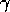
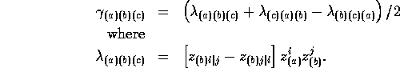
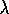

In REDUCE i is the pure imaginary number such that i^2 = -1 . Complex
quantities can be constructed using i
explicitly and the function cnj() will form the complex
conjugate by changing the sign of i. This applies to simple
expressions such as sums, products, and quotients. Functions can be
declared as complex by giving them a conjfn property whose
value is the name of a lisp-function that knows how to compute the
conjugate of the given function.
. Complex
quantities can be constructed using i
explicitly and the function cnj() will form the complex
conjugate by changing the sign of i. This applies to simple
expressions such as sums, products, and quotients. Functions can be
declared as complex by giving them a conjfn property whose
value is the name of a lisp-function that knows how to compute the
conjugate of the given function.
A simple variable can be declared complex via the function complex(), and this declaration can be removed with nocomplex(). When cnj() is applied to a complex variable, it returns unevaluated, but the display of the output is of the variable name overtopped with a bar.
Other functions that apply to complex quantities are re() which returns the real part of an expression, im() which return the imaginary part, cmod() which returns the modulus, and rat() which attempts to rationalize a complex quotient. This last function will not be successful unless the product formed by the conjugate of the denominator with the numerator and the denominator do not contain common factors that will cancel out again.
Continuing with the Kerr metric in a null-tetrad, we can compute the tensor metric from the connection and the frame metric with the function tenmetric(). The tensor metric name is the next in the default sequence of names as used by metric(), or the name given as the single argument.
#: tenmetrc(); computing g1 computing z_b shift finished. cofactor finished. determ finished. invert finished. metric finished. g1 #: mapfi(g)$ #: mapfi(g_inv)$As in the coordinate basis example, we find it is more convenient to not evaluate the metric components fully, so that rhob, rho2, and delta remain unevaluated; rhob has been defined as complex such that rhob*cnj(rhob) = rho2. It is, however, convenient to evaluate the derivatives of these quantities for this metric:
#: let df (rhob,r) = 1; #: let df (cnj(rhob),r) = 1; #: let df (rhob, th) = -i*a*sin(th); #: let df (cnj(rhob), th) = i*a*sin(th); #: let df(delta, r) = 2*r-2*m; #: let df (rho2, r) = 2*r; #: let df(rho2,th)=-2*a^2*sin(th)*cos(th);Next, we compute the Ricci rotation-coefficients, , with the function gamma(). The default name of this object is of the form <frame-metric>_gam, while the generic name gam has this as its target. Note that the name of the output is stored on the gamma property of the tensor metric. The user may supply a name to be used in place of the default name as the only argument to this function.
The rotation coeffients are rank-3 objects that are anti-symmetric in their first two indices, and are computed from:

The quantity  is used internally by gamma() but is not saved.
Each of the interesting tensors (and scalars) of GR can be computed in the frame with the functions frriemann(), frricci(), frriccisc(), freinstein(), and frweyl(). As with the GR conterparts, each function can take optional argument that is the name to use in place of the default name. The default name is constructed from the tensor metric name appended with an underscore and a trailing segment which is the generic name of the each object and which is itself stored on the name of each function. These functions either compute the required object for the current metric if it does not exist, or they return its name.
#: frricci();
computing eta1_frric
computing eta1_frri
computing eta1_gam
computing z_d
shift finished.
gamma finished.
computing eta1_gam_b
shift finished.
frriemann finished.
eta1_frric
For this example the final simplification is carried out in a manner
similar to that in the coordinate basis:
#: clear r^2; #: let rhob = r+i*a*cos(th); #: let rho2 = r^2 + a^2 * cos(th)^2; #: let delta = r^2-2*m*r+a^2; #: mapfi(frric); eta1_frric #: frric[]; eta1_frricAgain, the Ricci tensor is zero as it should be. In this example we did not examine or simplify the Riemann tensor or even the Rotation coefficients, but it is to be emphasized that for complicated or unknown metrics, this must be done, or the user risks having the calculation fail.